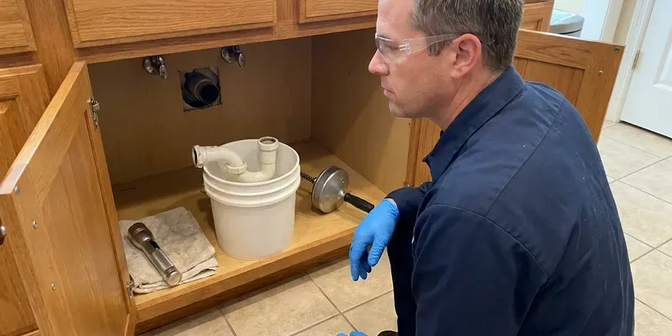

Walls Waterproofing in Marrero, LA
A musty basement in Marrero, LA usually means water is getting through the walls. We find where it enters and seal it.
- RedGard, Kerdi and Hydro Ban Membranes
- Interior Drain Tile Systems
- Licensed and Insured
- Sump Pump Installation

Stop Water at the Foundation Wall in Marrero, LA.
Call and we will trace the moisture with meters and thermal imaging before suggesting a fix.
Lasting Waterproofing for Showers, Block and Foundations in Marrero, LA
Beau's Plumbing waterproofs interior and exterior walls by finding the water first. We check supply lines, shower valves, drain connections and sprinkler heads before any membrane goes on the wall, then apply Schluter Kerdi, RedGard or Hydro Ban inside, or a masonry coating on exterior block. There is no guessing involved.
Work we handle every week:
- Crack injection with epoxy or polyurethane
- Shower wall and pan membranes before tile
- Crawl space vapor barrier work

Additional Plumbing Maintenance Services in Marrero, LA
Our maintenance and specialty plumbing services in Marrero, LA catch small problems before they become emergencies.


Customers
Why Choose Beau's Plumbing for Walls Waterproofing in Marrero, LA?
Waterproofing a wall without fixing the leak behind it just hides the problem for a while. We find the source, repair it and let the cavity dry out before we put on a single coat of sealer, even if that adds a day or two to the schedule. Patching over water fails.
- Mold Prevention, Drying and sealing a wall within days keeps mold from taking hold.
- Home Protection, Dry walls keep mold out of the framing and protect your home's value.
- Lasting Repairs, Injection resins and elastomeric coatings hold up for decades when the wall is prepped right.
Citywide Coverage
We waterproof walls across Marrero, from older block homes to newer stucco construction. Bathrooms, laundry rooms, garages and exterior foundation walls are all on the list of walls we seal, and a single visit can cover several of them if the moisture problems are related. An inspection usually runs about an hour.
Experienced Team
The crew that shows up in Marrero, LA has handled bowed block walls, leaking window wells, failed shower pans and sump pits that ran over in a heavy storm. Few surprises are left. You get a straight answer about what they find.
Safety-First Approach
Our installs meet Louisiana plumbing and building standards, and we keep written records of every coat, cure time and flood test. Inspectors can see the paper trail. Your file stays on record with us.
Trusted Certified Marrero Plumbing Services Professionals
At Beau's Plumbing, we take pride in licensed, certified plumbing services throughout Marrero, LA. Those papers on the wall mean something. Our plumbers hold recognized industry credentials, and they follow strict safety and quality rules on every repair, installation and maintenance call we run.
Call Us Now PHCC Plumbing Contractor Recognition
PHCC Plumbing Contractor Recognition Better Business Bureau (BBB) Accreditation
Better Business Bureau (BBB) Accreditation Angi Certified Pro
Angi Certified Pro ISO 9001 Quality Management Certification
ISO 9001 Quality Management CertificationWall Waterproofing Work We Handle in Marrero, LA
Cost-Effective Waterproofing Solutions in Marrero, LA
Not every wet wall needs a $15,000 excavation. Sometimes the fix is a downspout extension and regrading the soil so it slopes away from the house, six inches of drop over the first ten feet, and that costs a few hundred dollars. We start with the cheapest fix that will actually work. You get the options in writing, side by side.

Waterproofing Costs vs. Repeat Water Damage in Marrero, LA
Paying once beats paying every two years. Waterproofing a shower wall usually lands in the low thousands, while replacing drywall, cabinets and flooring again and again costs far more, and mold remediation on top of that can double the bill. The price for exterior block sealing depends on how much wall there is. We write up each option with its price so you can compare.
Basement Wall Sealing in Marrero, LA
Concrete block is porous, and its hollow cores fill with water like a sponge. Humid air causes sweating pipes and toilet tanks, and that moisture can damage subfloors and framing if leaks go unnoticed. We drill weep holes at the bottom course to drain the cores, then seal the face with a masonry waterproofer that lets vapor out but stops liquid water. The musty smell usually fades within weeks. The weep holes empty into interior drain tile when there is one.
Waterproofing for Older Homes in Marrero, LA
Houses built before modern drainage rules often have no footing drain at all, or a clay tile drain that collapsed decades ago. Homes from the late seventies through the mid nineties may contain polybutylene supply pipe, which is prone to failure. Fieldstone and old brick foundations need breathable products. Sealing soft old brick with a rigid coating traps water inside it and makes the face spall off over a few seasons, so we use lime-compatible or vapor-open coatings and pair them with interior drain tile. We repoint failed mortar joints before sealing.
Crawl Space Encapsulation in Marrero
Encapsulation seals the whole crawl space, walls and floor, with a reinforced poly liner. We run 12 to 20 mil liner up the walls, tape every seam, seal around piers and pipe penetrations, and often add a dehumidifier to keep relative humidity below 60 percent. Humid air causes sweating pipes and toilet tanks, and that moisture can damage subfloors and framing if leaks go unnoticed. Wood rot slows to a stop. Drier air under the floor also cuts down on the musty smell in the house.
Plumbing Leak Behind Walls in Marrero
A drip from a shower valve cartridge, a sweated copper stub or a loose drain slip nut can soak a wall cavity for months before paint bubbles. We find it with a moisture meter, a thermal camera that shows the cool wet spot, and a pressure test on the supply lines. Then we cut a clean access hole. The bad fitting or section of pipe gets replaced. Wet insulation comes out, and fans dry the cavity before we close it up.
Laundry Room and Utility Wall Waterproofing in Marrero, LA
Rubber washing machine hoses burst. We swap them for braided stainless hoses, put a drain pan under the washer piped to a floor drain where one is available, and install a quarter-turn shutoff or an automatic leak valve on the supply box. Water heaters get a pan too. The wall behind them can take a moisture-resistant board and sealer.

Shower Pan Leak Repair and Waterproofing in Marrero, LA
Wet baseboards outside the shower or a stain on the ceiling below usually point to the pan. We plug the drain, fill the pan with an inch or two of water, and mark the waterline and check it a day later. A drop means a leak. Rebuilding means a mortar pre-slope of a quarter inch per foot, a new PVC liner or bonded membrane, and a two-piece clamping drain set on the liner. We flood test the new pan before any tile goes down.
Waterproofing Contractors Near You in Marrero, LA
Moisture meters and thermal cameras ride on every truck. That lets us give you an answer on the first visit, including where the water is coming from and which repair fits, instead of scheduling a second trip just to diagnose. Quotes come in writing.
Homes around Marrero share a handful of common builds, from slab-on-grade ranches to block crawl spaces and full basements. Each one has its usual leak points, and knowing them helps us find the water source on the first pass instead of opening walls to look. Being nearby makes warranty visits quick.
Beau's Plumbing at a Glance
- Fully licensed plumbing team covering Marrero, LA
- 24/7 emergency service with same-day scheduling
- Clear written estimates, no hidden fees
- 4.8-star rated by 578+ Louisiana customers
Marrero Map
Marrero Information
- Population
- 32,382
- Area codes
- Local
- Service area
- Marrero and communities within 40 miles
- Nearby
- Metairie, Kenner, New Orleans, Mandeville
Sprinklers, storms and daily showers all push water into block, stucco and drywall, so Marrero, LA homes need walls sealed where the water gets in.
Talk to a Plumber
Call Beau's Plumbing for honest, reliable plumbing from people who know the trade in Marrero, LA.
Our Specialized Plumbing Services in Marrero, LA
At Beau's Plumbing, you get every kind of plumbing service from one company across Marrero, LA. We go from leak detection all the way to full system installations, for homes and commercial buildings, and we do it quickly at a fair price. Here are the core services we offer:


Our Wall Waterproofing Process in Marrero, LA
This is how a damp, stained wall becomes dry and sealed.
Request a Quote
Call (504) 317-6869 or use the online form. We book a time that fits your schedule for the on-site visit.
Detailed Inspection
Our tech finds the source of the water and checks how far the damage reaches. You get the findings in plain terms.
Custom Solution
We build the plan around your foundation and the leak, and pick materials that suit the wall.
Frequently Asked Questions About Walls Waterproofing in Marrero
Shower wall waterproofing with a membrane system usually runs $1,200 to $3,500 including demolition and backer board, with the new tile priced separately. Block wall sealing outside often costs $800 to $3,000. Foundation waterproofing below grade is usually $2,500 to $8,000.
Damp proofing is usually a thin spray-on asphalt coat. It slows soil moisture but cannot hold back water under hydrostatic pressure. Waterproofing uses thicker membranes, drainage boards and footing drains rated to stop liquid water, which is what a basement in wet soil or a high water table needs.
Always. Sealing a wall with an active leak inside it traps the water, so the studs and sheathing rot faster than if the wall had been left alone. We repair the leak and dry the cavity first.
Check the basement after a heavy rain. Wet spots on the walls, mold or mildew, a musty smell in the crawl space, new foundation cracks, efflorescence on the concrete or standing water on the floor all mean water is getting in somewhere. Those signs usually get worse, not better.
It depends on the wall and the site. On exterior foundation work we use rubberized asphalt sheet membranes, polyurethane-modified asphalt liquids, bentonite panels and crystalline coatings, picking the one that suits the soil and the wall material. For showers, we use Kerdi, RedGard or Hydro Ban.
Some handy homeowners do. Rolling on a liquid membrane is not hard, but seams, inside corners and the drain connection are where most leaks start, and a pan also needs a correct quarter-inch-per-foot slope plus a 24-hour flood test. A pro install lowers the odds of hidden damage.
Schluter Kerdi, Custom RedGard and Laticrete Hydro Ban cover most of our showers. Sheet membranes like Kerdi suit a fast schedule since there is no cure time, while liquids like RedGard and Hydro Ban go on in two coats and need to dry between them. Each manufacturer's install steps are followed exactly.
For big jobs, often yes. Excavation, structural changes and drainage changes can require a permit from the Marrero building department, and we confirm the requirements before we send the quote. We file the application when one is needed.
What Our Customers Say About Our Plumbing Experts

Laura S.
Our 40 gallon tank started leaking from the bottom after thirteen years. The tech hauled the old one out, set a new unit with a fresh expansion tank, and had hot water running in about four hours. He took the old tank with him too.
Water Heater Replacement · Marrero, LAJessica T.
We were adding a gas range in a kitchen remodel and needed a new line run from the meter. The plumber pulled the permit, ran the pipe through the crawl space, and had it inspected and approved within the week.
Gas Line Repair · Marrero, LA
Marcus H.
Grease from the fryer line kept clogging the kitchen drain at my diner. Beau's Plumbing hydro jetted the line after closing, showed me the buildup on camera, and set us up on a quarterly cleaning so it does not catch us on a Friday again.
Drain Cleaning · Slidell, LAJames P.
Our restaurant had a slow leak at the hand sink that was rotting the cabinet base. Beau's Plumbing came in at six in the morning before prep, replaced the trap and both supply lines, and was packed up before my first cook clocked in.
Commercial Plumbing · Kenner, LA
Tyler J.
We bought a taller comfort height toilet for my dad, who just had knee surgery. The plumber pulled the old one, found the flange was cracked, and replaced it before setting the new bowl. Took about two hours.
Toilet Installation · Metairie, LARobert G.
The camera showed a full break in our clay sewer line near the street. Beau's Plumbing replaced it with a trenchless pipe burst, so the only digging was two small pits in the yard. They let us watch the footage before and after.
Sewer Line Replacement · Kenner, LA